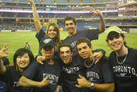
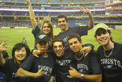
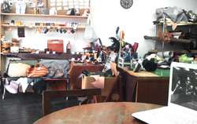
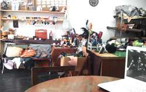

沖縄 留学＆ワーキングホリデー夏セミナー 日程
|
日時 |
2013年 7月 13日 (土) 13：00 ～ 17：00 |
|
場所 |
沖縄産業支援センター 会議室小310号室 |
|
参加費 |
無料 |
|
ご注意 |
複数人でお越しの方は、ご予約時に人数のご報告をお願いいたします。 |

沖縄 留学＆ワーキングホリデー夏セミナー 当日スケジュール
13:00～
① これで基本はばっちり！初心者向けセミナー（オーストラリア・カナダ）
国の魅力・現地のこと丸分かりセミナー。
気になることNo.1のビザの内容や語学学校の必要性
失敗しない渡航準備・海外生活の為のお話。
② 現地の貴重な話が聞ける！語学学校セミナー
14:00～ Navitas （オーストラリア）
Navitas Englishはオーストラリアに6キャンパスある語学学校。
帰国後の就職活動に有利な資格取得や仕事のためのオプションクラスが充実。
非常にレベルの高い授業を受けることができる基本英語のESLコースは人気の高いコースになっています。
質の高い授業の理由とは…？Navitasでは英語教師トレーニング専門機関「Australian TESOL Training Centre（ATTC）」を併設し、
常に講師指導、英語教育の研究を行っています。
また、講師の採用条件は、大学卒業＋ケンブリッジCELTAまたは同等以上の資格を保持。
採用後も、定期的なトレーニングの実施や校長またはシニア講師による授業審査、
Student Evaluation（学生評価表）を行うことにより、講師は常に緊張感とモチベーションを保ち、
質の高さを継続しています。
14:30～ KGIC （カナダ）
 

KGIC(King George International College)は語学学校と専門学校の両方を運営していて、仕事に強い留学プログラムを提供しています。
英語学習から進学、ビジネス、有給インターンシップと多彩なプログラムを開講し、
英語でのスキルアップ・キャリアアップ、留学したことで就職を有利にしたい人、
英語環境で仕事をしたい人に最適な学校です。
「英語を身に付けたいけど、英語だけじゃ物足りない！」
「英語プラスαでの留学をしたい！」「専門留学をしたい！」
そんな人たちにもおススメのプログラムを提供していて、
英語以外の数多くの専門スキルを身に付けることもできます。
英語を使い専門的な知識を身につけることにより、
自信をつけ、更なる英語力の向上ができれば、
帰国後の飛躍に大きく役に立てることができます。
15:00～
③ 質疑応答・交流フリータイム
セミナー後も当協会スタッフ、学校スタッフがおりますので、質疑応答や交流など自由にすることができます。
セミナーを聞いてわからなかったこと、不安なこと、プランのご相談、海外生活について…なんでもご質問ください。
同じ海外に興味のある参加者と一緒に、懇談形式でお話しましょう！
ワーキング・ホリデー協会 沖縄オフィス
オーストラリアでのワーホリ経験を活かして「日本ワーキングホリデー協会」と提携し、
沖縄で沖縄人による沖縄の若者にむけたワーキングホリデーセミナーを開催しております。
まずワーキングホリデーの制度をもっと沖縄の若者にも知ってもらいたい。
私の体験談も話しつつ、ワーキングホリデー向けの語学学校探し、アルバイトやシェアハウスの見つけ方等を紹介しつつ、
なんでもご質問にお答え致します。 お友達も御誘いのうえご参加ください。いいことばかり話しません。
ワーキングホリデー中の失敗談やこうすればよかったなど、 ワーキングホリデー経験者による沖縄県民のためのワーキングホリデーセミナーです！
沖縄の人にもっとワーキングホリデーを！ワーキングホリデーに対する認知度をアップするとともに、 沖縄の若者と一緒に沖縄を盛り上げていきたいと思います。
日本ワーキングホリデー協会東京オフィス 新宿本店と連携しながら沖縄にワーキングホリデー最新情報をお届けいたします。
 
